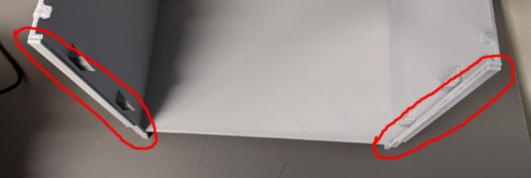
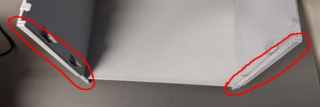
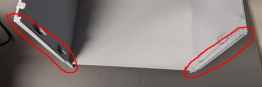
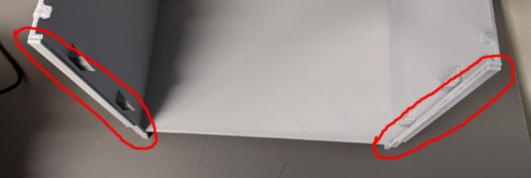
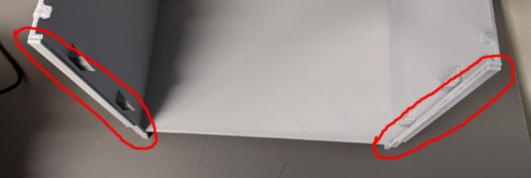

operanthouseのヘッダー
Kitaya lab
オペラントハウスとは
What's Operant House?
行動解析君とは?
Mr. Behavio?
Gait analyzer
プライバシーポリシー
オペラントハウスとは?
制作の準備(ﾀﾞｳﾝﾛｰﾄﾞ)
3Dプリンターの準備
オペラントハウスの製作
オプションパーツについて
赤外線カメラ検出
ｵﾌﾟｼｮﾝﾊﾟｰﾂ(ﾚﾊﾞｰ)
赤外線センサーバー検出
操作用モニタの追加
UCLA Miniscope
ｵﾍﾟﾗﾝﾄﾊｳｽの使い方
オリジナル課題の追加
Command list
デフォルト課題の説明
Tips
トラブルシューティング
About copyright
Go to English page
赤外線カメラ検出
チャンバー前面にあるレバーモジュール用の穴は不要なのでカバーで覆います。
下のツメを引っかけ、M3x20mmネジで固定します。
<旧バージョン>
<新バージョン>
次にスペーサーをチャンバーに両面テープで貼り付けます。

最後にモニタ上面の1/3ほどを写真のように白テープで貼ります（これはカメラのgainが上がりすぎてサチュレートするのを防ぎます）。
これでタッチスクリーン用のデバイスが完成です。


 

 
